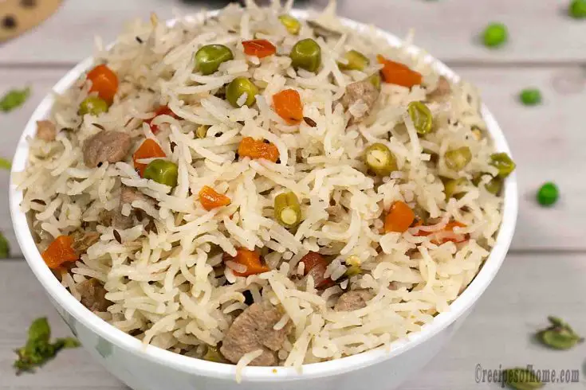

Pulao

Description
For me, Mutton Pulao means so much more than just a tasty rice dish.
It’s the reassuring aroma of cinnamon, cardamom and cumin wafting around the kitchen and making its way into the living room.
It’s my Chachi stirring a giant pot the size of her entire hob, sauteing mutton to serve Pulao to our entire family for Eid ul-Adha.
Excuse me for being a bit cliche, but Mutton Pulao is love.
Ingredients
- Mutton (goat meat) - 500 grams, cut into pieces
- Basmati rice - 2 cups
- Onion - 2 medium-sized, thinly sliced
- Ghee or oil - 4 tablespoons
- Whole spices (cumin seeds - 1 teaspoon, cinnamon stick - 2-inch piece, cardamom pods - 4)
Steps
- Rinse the basmati rice under cold water until the water runs clear. Soak the rice in water for 30 minutes, then drain and set aside.
- Heat the ghee or oil in a large pot or pressure cooker over medium heat. Add the whole spices (cumin seeds, cinnamon stick, cardamom pods) and sauté for a minute until fragrant.
- Add the thinly sliced onions to the pot and sauté until they turn golden brown. This may take around 5-6 minutes.
- Now, add the mutton pieces to the pot and cook until they are browned on all sides. Stir in the ginger-garlic paste and green chilies, and cook for another 2 minutes.
- Add the soaked and drained rice to the pot, followed by turmeric powder, red chili powder, and salt. Stir everything together gently to coat the rice and meat with the spices.
- Pour in water and give it a good stir. If using a pressure cooker, cover and cook for 2 whistles on high heat, then reduce the heat and cook for another 10 minutes on low heat. If using a regular pot, cover with a tight-fitting lid and cook on low heat for about 20-25 minutes or until the rice and meat are cooked through and tender.
- Once cooked, let the pulao rest for 5 minutes. Then, fluff the rice gently with a fork. Garnish with fresh cilantro leaves and serve hot.